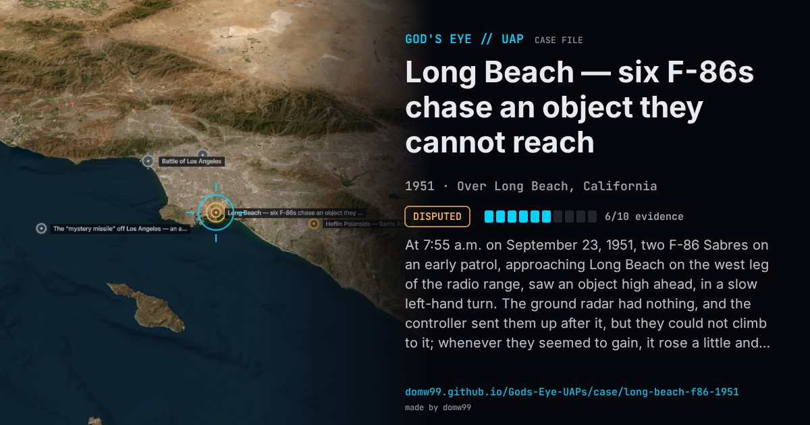

Long Beach — six F-86s chase an object they cannot reach

At 7:55 a.m. on September 23, 1951, two F-86 Sabres on an early patrol, approaching Long Beach on the west leg of the radio range, saw an object high ahead, in a slow left-hand turn. The ground radar had nothing, and the controller sent them up after it, but they could not climb to it; whenever they seemed to gain, it rose a little and stayed out of reach, still circling. Running short of fuel after about ten minutes, they were relieved by four more F-86s scrambled from George AFB, which worked in pairs for another half hour to reach what they put at 50,000 to 55,000 ft, then also turned back; a seventh fighter arrived to find nothing. All but one pilot described a silver aircraft with highly swept-back wings; one said it looked round. Edwards AFB, Nellis, Inyokern and George had nothing in the air that could fly that high. Blue Book later put it down to a weather balloon; Ruppelt, who tried to make that answer fit, could not.
Explanation
Blue Book’s record card evaluates it as a balloon: a radiosonde released from Long Beach Municipal Airport was near the fighters’ path, and the first pair were looking almost straight at it when they first saw the object. Ruppelt, who plotted the balloon (tracked by radio fixes) against the F-86s (tracked by radar), wrote that the paths agreed only at that first moment, that the weather observers watching their balloon saw no fighters near it, and that it burst about ten minutes before the pilots lost sight of the object.
What was seen
Shape: A silver aircraft with sharply swept wings, or round and silver; orbiting slowly to the left
Witnesses: Seven Air Force F-86 pilots and their ground controller
Duration: About 50 minutes
Sources
- Project Blue Book file, Long Beach, September 1951 (Internet Archive)
- Edward Ruppelt, The Report on Unidentified Flying Objects (1956), Chapters 7–9 (Project Gutenberg)
Browse
- United States
- 1950s
- Disputed
- Military encounters
- Official government documents
- Military witnesses
- Pilot and aircrew witnesses
- Radar tracking
- Spheres and orbs